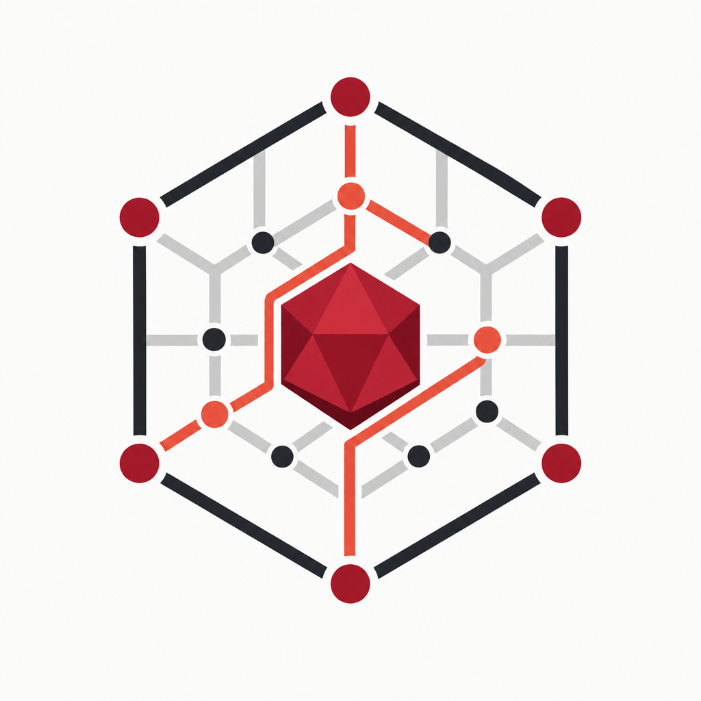

Native mesh core
Optional Rust chimera_core via FFI, with a pure-Ruby fallback when uncompiled.

ruby_llm_mesh
Sovereign mesh routing for Ruby — native FFI core, OpenAI, Anthropic, and local nodes
with circuit breaking, strategy-based execute, and cloud failover.
gem install ruby_llm_meshOptional Rust chimera_core via FFI, with a pure-Ruby fallback when uncompiled.
AiAgentRouter.execute supports :auto, :p2p_mesh, and real cloud providers.
AiAgentRouter.complete talks to multiple providers with a single call shape.
Per-provider failure tracking opens circuits and skips unhealthy backends.
Chunking, local embeddings, and tool schema adapters for OpenAI and Anthropic.
Works with Ollama, LM Studio, vLLM, and other OpenAI-compatible servers.
require "ruby_llm_mesh"
AiAgentRouter.configure do |c|
c.openai_api_key = ENV["OPENAI_API_KEY"]
c.anthropic_api_key = ENV["ANTHROPIC_API_KEY"]
c.default_providers = %i[anthropic openai local_node]
end
response = AiAgentRouter.execute(
intent: "Explain circuit breakers briefly.",
strategy: :auto
)
puts response.content
puts response.provider